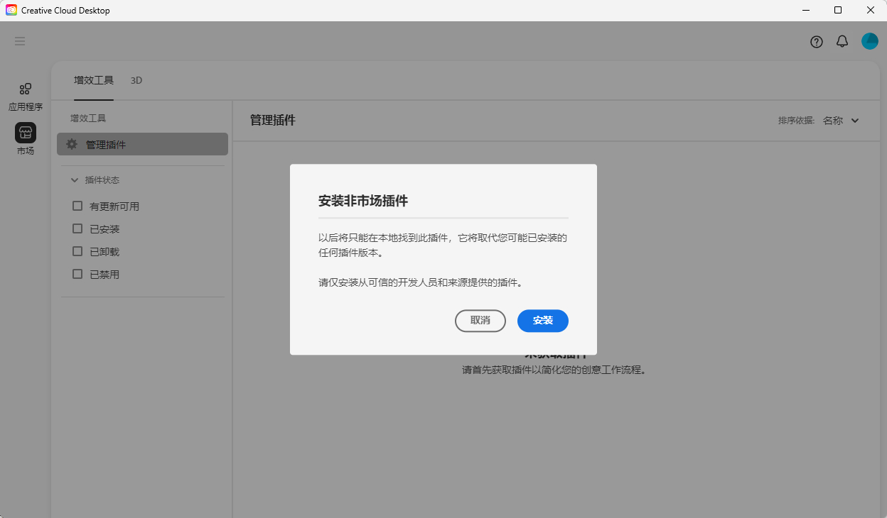
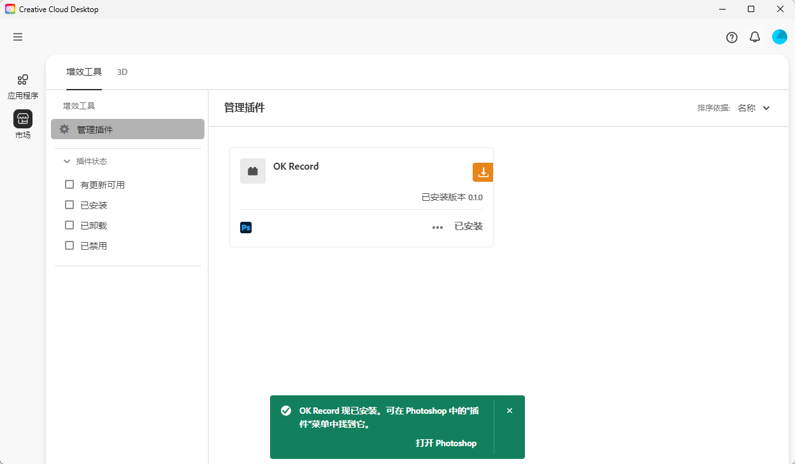
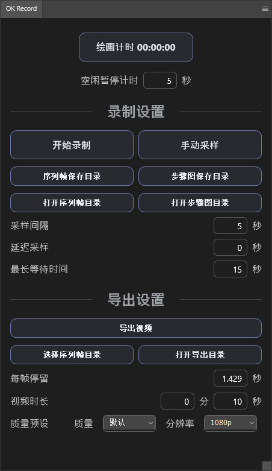
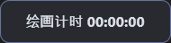
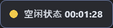
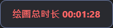
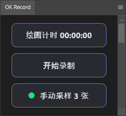
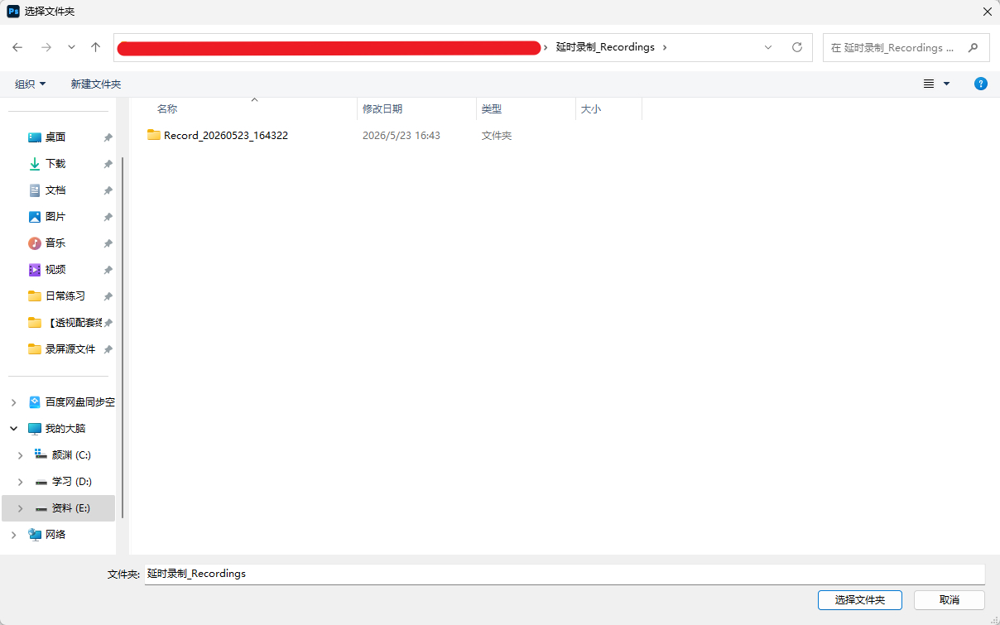
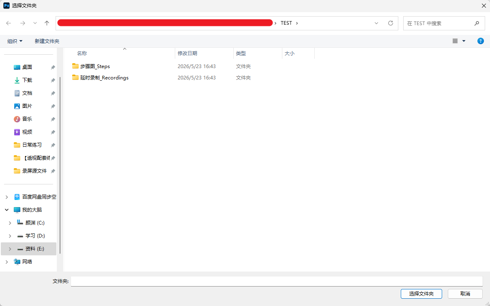
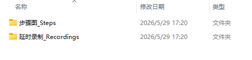

OK-Record 使用说明
OK-Record 是一个 Photoshop 延时录制插件。它会在绘画时按间隔保存画布快照，最后把这些序列帧导出成 MP4 延时视频。
1. 下载哪个版本
下载页面：Win OK-Record v1.0.3
★ 仅支持 Photoshop 2023 24.4.0 或更高版本。
Release 页面里有两个 .ccx 安装文件：
- OK-Record_with-ffmpeg.ccx：推荐普通用户下载。已经内置 FFmpeg，安装后可以直接导出视频。
- OK-Record.ccx：轻量版。适合已经安装 FFmpeg，或者知道如何配置 FFmpeg 的用户。
插件打开面板时会检查 update.json。如果发现新版本，会在面板提示并引导你打开下载页；更新需要手动下载新版安装文件。
如果你不确定选哪个，就下载 OK-Record_with-ffmpeg.ccx。
2. 安装插件
- 下载
.ccx文件。 - 双击
.ccx，按 Creative Cloud Desktop 的提示安装。 - 安装完成后，重新打开 Photoshop。
- 在 Photoshop 增效工具菜单中找到 OK-Record 即可打开插件面板。

截图待放：Creative Cloud Desktop 安装确认窗口。images/02-install-ccx.jpg

截图待放：Creative Cloud Desktop 显示 OK-Record 已安装。images/02-install-ccx_2.jpg

截图待放：Photoshop 中打开 OK-Record 插件面板。images/03-open-photoshop-panel.png.jpg
如果你的加载工具没有刷新，请先关闭 Photoshop，重新加载解压后的插件目录，再打开 Photoshop。
3. 录制前建议
开始录制前，先把 Photoshop 文档保存为本地 PSD/PSB 文件。保存过的 PSD/PSB 即使当前画布还有未保存修改，也可以继续录制。
如果文档从未保存到本地目录，点击开始录制会提示先保存，不会写入序列帧。
可以在保存文档后手动指定 OK-Record 保存目录。没有手动指定时，OK-Record 会自动存放到 Photoshop 文档的保存路径附近；手动指定只对当前 PSD/PSB 生效。需要让增量 PSD/PSB 续写旧项目时，请在那个文件里再次指定同一个 OK-Record 保存目录。
录制失败、手动采样失败、导出完成或导出失败时，插件会弹出提醒窗口。关闭弹窗后，面板底部仍会保留详情信息，方便选中并复制给开发者排查。
4. 绘画计时
面板最上方的绘画计时用于单独统计实际绘画时间。它只记录你画画的时间，不会影响序列帧录制和视频导出。
| 界面状态 | 状态 | 说明 | 用户操作 |
|---|---|---|---|
 |
未开启 | 默认状态，还没有开始统计绘画时间。 | 点击按钮开始绘画计时。 |
| 准备计时 | 绘画计时已经开启，正在等待画布变化。 | 正常开始绘画即可，有画布变化后会开始累计时间。 | |
| 计时中 | 正在统计当前绘画时间。 | 需要暂停时，再次点击按钮。 | |
 |
空闲等待 | 超过空闲暂停绘画计时后，计时暂时停住，避免把离开电脑的时间算进去。 | 继续绘画后会恢复累计；也可以调整空闲暂停绘画计时。 |
 |
结束计时 | 已经结束本次绘画计时，并显示绘画总时长。 | 按住 Alt 点击按钮可以结束计时；结束后再次点击可重新开始。 |
空闲暂停绘画计时 用来设置多久没有画布变化后暂停计时。继续绘画后，计时会继续累计。
5. OK-Record 设置
OK-Record 设置主要用于控制绘画计时、自动序列帧录制和手动采样。
设置好参数后，可以把面板缩到最小，刚好显示绘画计时、开始录制和手动采样三个主要功能。

截图待放：OK-Record 面板缩到最小时显示三个主要功能。images/03_Mini面板.jpg
自动录制
点击开始录制后，OK-Record 会按采样间隔自动保存序列帧。录制中再次点击按钮可暂停；暂停后再次点击可继续。需要清空序列帧时，点击红色 清空序列帧 按钮，并在弹窗中确认。
暂停录制后可以点击 指定 OK-Record 保存目录。选择新目录会结束当前暂停录制状态，面板回到开始录制，并按新目录恢复或扫描时间线。
手动采样
手动采样会立即保存当前画面，适合记录草图完成、大色块完成、细化前、完稿前等重要阶段。它保存的是单张阶段图，不影响正常延时录制。
| 界面状态 | 功能 | 说明 | 用户操作 |
|---|---|---|---|
| 录制未开启 | 默认状态，还没有开始自动保存序列帧。 | 设置采样间隔后，点击开始录制。 | |
| 正在录制 | OK-Record 会按采样间隔自动保存画布序列帧。 | 继续正常绘画；需要暂停时再次点击录制按钮。 | |
| 暂停录制 | 暂停后不会继续自动保存新的序列帧。 | 再次点击可继续录制；也可以导出当前时间线。需要切换 OK-Record 保存目录时，选择新目录会结束当前暂停录制状态。 | |
| 手动采样 | 用于立即保存当前画面，记录一个重要阶段。 | 在草图、大色块、细化前等节点点击手动采样。 | |
| 采样计数 | 显示本次已经手动保存了多少张阶段图。 | 继续点击手动采样会累加数量，不影响自动录制。 |
保存和打开目录
指定 OK-Record 保存目录 用来设置当前录制项目目录。手动选择后，OK-Record 会直接在你选的目录下创建 步骤图_Steps 和 延时录制_Recordings。这个选择只绑定当前 PSD/PSB；如果要让增量 PSD/PSB 续录到同一个项目，需要在那个文件里再次选择同一个项目目录。
正在录制或正在写入时不能切换保存目录。暂停录制时可以切换目录；切换后当前暂停录制会结束，之后会按新目录恢复或重新开始。
如果没有手动选择目录，且 Photoshop 文档已经保存，OK-Record 会在 PSD 同级目录创建 OK-Record_PSD文件名 文件夹。新保存的其他 PSD/PSB 默认使用自己的项目文件夹。需要回到默认目录时，重新选择这个默认项目文件夹即可。
打开序列帧目录和打开步骤图目录可以快速进入对应文件夹。

截图待放：OK-Record 保存目录的位置。images/08_序列帧保存目录.jpg
采样参数
- 采样间隔：自动录制多久保存一帧。间隔越短，记录越细，文件也会更多。
- 延迟采样：到达采样时间后，先等待 Photoshop 空闲，再保存画面。
- 最长等待时间：如果一直没有等到空闲，超过这个时间后仍会保存一帧。
6. 导出设置
导出设置用于把序列帧合成为 MP4 视频。
录制中请先暂停再导出。暂停后可以直接导出，也可以继续录制，新的序列帧会接在原来的尾号后面。
导出完成或导出失败都会弹出提醒窗口。导出路径、日志路径和错误详情也会保留在面板底部，可以选中复制。
- 导出视频：使用当前或已选择的序列帧目录导出 MP4。
- 选择序列帧目录：导出以前录制过的内容时使用。
- 打开导出目录：快速查看导出的 MP4 文件。

截图待放：选择要导出的序列帧目录。images/08_选择要导出的目录.jpg
- 每帧停留：根据当前源帧数量反推视频时长。大量源帧导出为短视频时，OK-Record 会自动均匀抽取代表帧。
- 视频时长：优先控制最终视频长度。源帧太多时会保留首尾帧并均匀抽取中间帧，不会强制导出超长视频。
- 质量预设：控制视频压缩质量。质量越高，画面越清晰，文件也会更大。
- 分辨率：控制导出视频的最大尺寸。分辨率越高，细节越完整，导出文件也会更大。
7. 文件保存在哪里
如果 Photoshop 文档已经保存，默认会保存在 PSD 同级目录的项目文件夹里。
OK-Record_PSD文件名/
步骤图_Steps/
延时录制_Recordings/
frames/
exports/
logs/
temp/
manifest.jsonframes：自动录制保存的序列帧。exports：导出的视频。logs：导出日志，出问题时可以发给开发者查看。temp：临时文件。manifest.json：录制信息文件。
如果你手动选择了 OK-Record 保存目录，插件会直接在你选择的项目目录下创建同样的两个文件夹。这个选择只绑定当前 PSD/PSB；新保存的其他 PSD/PSB 默认使用自己的项目文件夹。重新选择当前 PSD 的默认项目目录即可回到自动目录。

截图待放：录制文件夹和步骤图文件夹路径。images/07-文件夹路径.jpg
8. FFmpeg 是什么
FFmpeg 是用来把序列帧导出成 MP4 视频的工具。
如果你下载的是 with-ffmpeg 版本，不需要额外安装 FFmpeg。
如果你下载的是轻量版，需要自己安装 FFmpeg。Windows 可以用 PowerShell 执行：
winget install --id Gyan.FFmpeg.Essentials -e --source winget安装后请重启 Photoshop，再导出视频。
如果导出时出现缺少 FFmpeg 的提示，请安装 FFmpeg，或者使用免配置版。
9. 常见问题
找不到导出的视频
导出视频默认在 延时录制_Recordings/exports 文件夹里。也可以在 OK-Record 面板里点击打开导出目录查看。
导出失败，提示找不到 FFmpeg
说明你使用的是轻量版，并且电脑没有正确安装 FFmpeg。最简单的解决方式是下载 OK-Record_with-ffmpeg.ccx 安装文件。
录制失败，提示 Cannot read properties of undefined (reading 'getPixels')
这通常说明当前 Photoshop 版本不支持 OK-Record 使用的正式 Imaging API。请升级到 Photoshop 2023 24.4.0 或更高版本后再使用。
录制过程中改了画布尺寸怎么办
同一比例的画布尺寸变化会在导出时统一缩放。 如果检测到不同比例的序列帧，OK-Record 会让你选择自动补边合并、忽略少数比例帧，或手动清理后再导出。
Photoshop 或电脑中途崩溃怎么办
已经写入磁盘的序列帧通常还在。重新打开 Photoshop 后，继续使用同一个 PSD，或手动选择之前的 OK-Record 保存目录，再尝试导出视频。
10. 联系作者
如果使用过程中遇到问题，可以通过下面方式联系作者：
- QQ：100209743
- B站：-BADBRUSH-